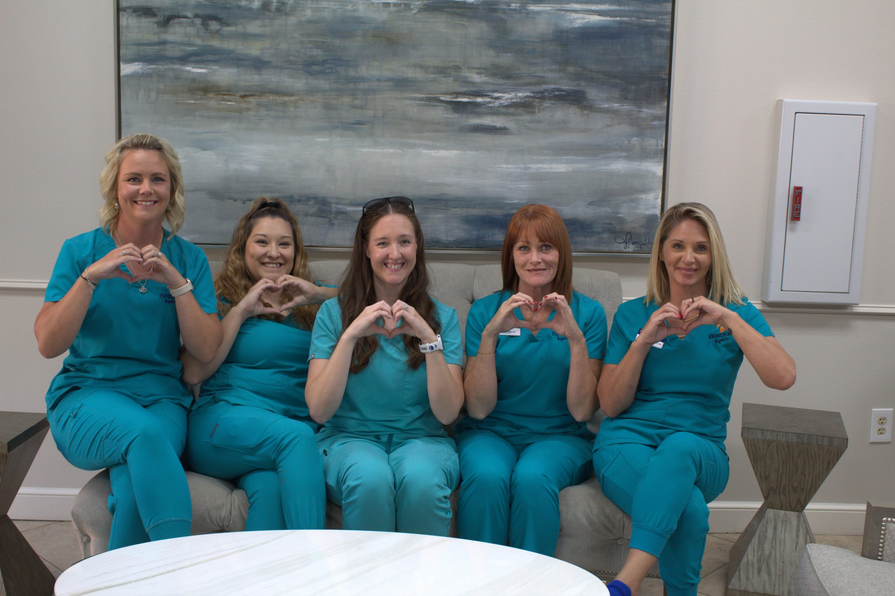
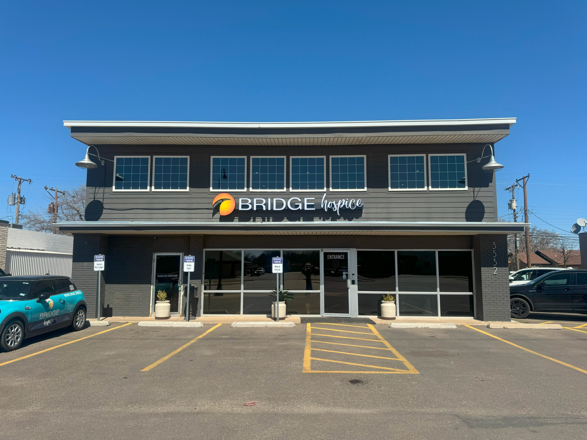

March 28, 2026
How Hospice Volunteers Change Lives
Our volunteer program pairs trained companions with patients and families, offering presence, comfort, and connection during the most meaningful moments.
Read MoreInsights, guides, and stories from our care team

Our volunteer program pairs trained companions with patients and families, offering presence, comfort, and connection during the most meaningful moments.
Read MoreStarting the conversation about hospice can feel overwhelming. Here are gentle approaches our social workers recommend for navigating this important discussion.
Read More
Effective pain management is central to quality end-of-life care. Our physician-led team explains how we approach pain relief with precision and compassion.
Read More
We have integrated the HOPE Assessment framework into our intake process, enabling more personalized care plans from the very first visit.
Read MoreWhen time becomes precious, small gestures carry enormous weight. Our chaplain shares reflections on presence, gratitude, and the beauty of being together.
Read MoreGrief and personal growth often share the same season. A bereavement counselor on our team explores how families find resilience in the hardest chapters.
Read More